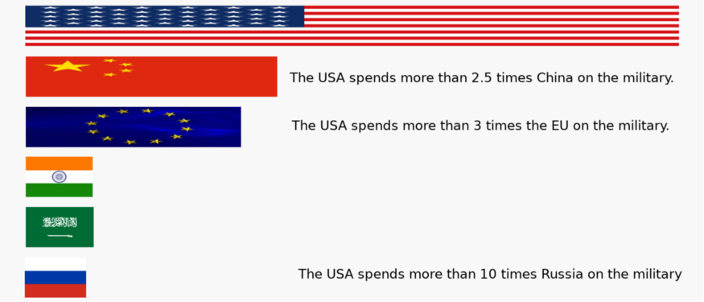

I recently wrote a story about how the USA spends dramatically more than other countries on the military. Compared to China, we spend more than 2.5 times as much. Compared to Europe, we spend more than 3 times as much. Why are we spending that much?

The companies that build planes, tanks, and ships spend millions lobbying Congress and giving to their campaigns. According to OpenSecrets, in 2016, they spend $71 million on lobbying and $31 million on campaigns.
The average country spends about 1.8% of its production on the military. If we consider that the benchmark, we’re spending an extra $277 billion. Thus, military companies are getting $2,715 of our government’s money, for each $1 they spent on our politicians.
If we look at just the top 5 military contractors (Lockheed Martin, Boeing, Raytheon, General Dynamics, and Northrop Grumman), they received $96.7 billion in contracts and spent $58.5 million in lobbying and $18.8 million in campaign contributions. It’s hard to say what they would have gotten without this money, but they received $1,251 in contracts for every $1 they spent.
They spent over $50 million lobbying every year for the last 10 years. I assume they feel the money is well spent.